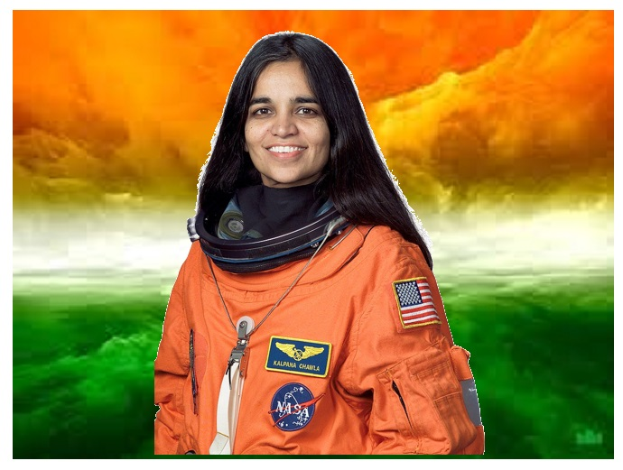

Kalpana Chawla
A Women who made India proud.

Kalpana Chawla (March 17, 1962– February 1, 2003) was an Indian American astronaut
and the first woman of Indian origin in space.
and the first woman of Indian origin in space.
Here's a time line of Kalpana Chawla's life:
- 1914 - She was born on 1st July in Karnal.
- 1933- She moved to the United States to complete her education.
- 1935- Married a flying instructor and aviation author, Jean-Pierre Harrison.
- 1937 - Got an M.S. in Aerospace Engineering from the University of Texas in Arlington.
- 1938 - She received a Ph.D. in the same field and began to work for NASA.
- 1941 - Joined Overset Methods Inc. as Vice President and Research Scientist.
- 1942 - She joined the NASA 'Astronaut Corps.
- 1944 - Kalpana was the mission specialist for prime robotic arm operator on STS-87.
- 1945 - Her first mission on Flight STS-87 took place.
- 1953 - Assigned on her second mission as part of Flight STS-107.
- 1962 - Chawla got a second chance for the mission on Flight STS-107. On February 1st, she died when the space shuttle broke down.
"I would say if you have a dream, follow it. It doesn't really matter whether you are a woman or from India or from wherever."
- Kalpana Chawla